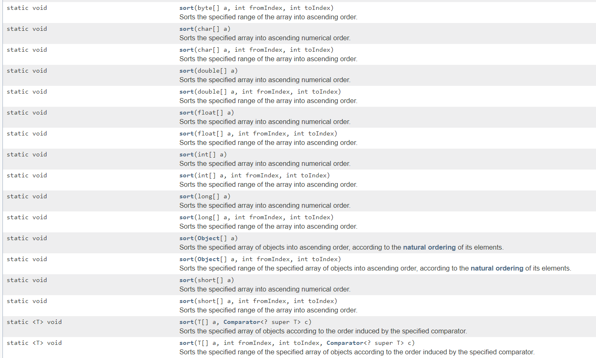

Stdio
Importing Packages
To import every class within a package in Java, you would write the following in your code before the class declaration:
// the general formula is:
import packageName.*;
// example:
import java.util.*;
If you want to import only one class from a library, you replace the asterisk in the last example with the class name:
// general formula:
import packageName.className;
// example:
import java.util.ArrayList;
Object
clone
Cloning in Java uses the .clone() method. The class must implement the Cloneable interface.
For the clone method, you must throw the exception that corresponds to the inferface.
Example
class Test implements Cloneable{
public static void main(String[] args){
}
protected Object clone() throws CloneNotSupportedException{
}
}
Shallow Cloning v. Deep Cloning
Shadow cloning creates an object that has the same references (if the field isn't a primitive type) as the original object. Deep cloning copies all the separate field and creates new references for the new object so all it's contents are copies to a new object.
Shallow Clone Example
class Test implements Cloneable
{
public Object clone() throws CloneNotSupportedException{
return super.clone();
}
}
Deep Clone Example
class Test implements Cloneable
{
ArrayList c = new ArrayList<>();
public Object clone() throws CloneNotSupportedException
{
Test t = (Test)super.clone();
t.c = new ArrayList<>();
// Create a new object for the field and assign it to shallow copy obtained to make it a deep copy
return t;
}
}
toString
In an object, the toString() method returns the string representation of the object.
class Test implements Cloneable{
private int a;
private int b;
//Overriding the toString() method
public String toString(){
return "A: " + a + "B: " + b;
}
}
Integer and Double
Integer is the wrapper class for an integer(int) and Double is the wrapper class for a double, and these classes represents the numbers as objects.
Autoboxing is the automatic conversion that the Java complier makes from the primitive type to the wrapper class and unboxing is when the Java complier converts the wrapper class to the primitive type.
Converting Between int and Integer
- int -> Integer : Integer newInteger = new Integer(i);
- Integer -> int : Integer.valueOf(i)
Converting Between Double and double
- double -> Double : Double newDouble = new Double(d);
- Double -> double: double -> Double : d.doubleValue()
Example
ArrayList<Integer> numberList = new ArrayList<Integer>;
numberList.add(22); //This is compiled as numberList.add(new Integer(22));
String
The String class
Math
Static Methods
- abs(a): This returns the absolute value of the number "a"
- sqrt(a): This returns the square root of the number "a"
- pow(a,b): This returns ab
- random(): This returns a number (0,1] (excluding 0 to including 1)
- min(a,b): This returns the minimum between a and b
- max(a,b): This returns the maximum between a and b
Variables
- Math.PI: Represents π
- Math.E: Represents e
How to call the methods
The methods must be called using the dot notation and "Math" as the prefix.
Example
double radius = 22;
double areaOfCircle = 2*Math.PI*radius;
double x = Math.min(22, 32); //This should assign 22 to the variable x
double y = Math.max(22, 32); //This should assign 32 to the variable y
List<E> and ArrayList<E>
List<E> is an interface and java.util.ArrayList<E> implements List<E>. An ArrayList stores the elements within an array.
Because ArrayList<E> implements List<E>, an ArrayList can be declared in two ways with the type of object between < and >:
ArrayList<Integer> ints = new ArrayList<Integer>();
or
List<Integer> ints = new ArrayList<Integer>();
Methods Used for List<E> and ArrayList<E>
- int size(): Returns the number of values in the list
- boolean add(Object x): Adds Object x to the end of the list and returns true
- Object get(int index): Returns the object in the list at index
- Object set(int index, Object x): Sets the value at index to Object x and returns the old value at index
- Object remove(int index): Removes the value at index, shifts every element behind index towards the front of the list by 1 and returns the old value that was stored in index
- void add(int index, Object x): Adds Object x at index and shifts every element behind index towards the end of the list by 1
- boolean contains(Object x): Returns true if one of the elements in the List is equal to x
- int indexOf(Object x): Returns the index of the first occurence of x in the List and -1 if x never appears in the List
- boolean remove(Object x): If the List contains x, removes the first occurence and removes true, else returns false
Note :
add and remove changes the size of the ArrayList.
Example
ArrayList<String> newList = new ArrayList<String>();
newList.add("Hello");
newList.add("HiThere");
for(String word: list)
System.out.println(word + " ");
//Prints out Hello HiThere
System.out.println(newList.get(0)); //Prints out Hello
newList.add(0, "Hi");
System.out.println(newList.size()); //Prints out 3
for(String word: list)
System.out.println(word + " ");
//Prints out Hi Hello HiThere
Collection <E>, Collections and Arrays
Collection <E>
The Collection interface is typically used to move and manipulate groups of object with maximum generality.
Methods Used in Collection <E>
- boolean add(Element e): Makes Element e an element in the collection
- void clear(): Removes all elements in the collection
- boolean contains(Object o): Returns true is the Collection contains o
- boolean isEmpty(): Returns true is there are no elements in the collection
- boolean remove(Object o): Removes an instance of the element if it is present in the collection
- int size(): Returns the number of elements in the collection.
More information about Collection <E> Here
Collections
This class consists of methods used to manipulate a Collection.
Methods Used in Collections
- static void reverse: Reverses the order or elements in a specified list
- static void shuffle: Randomly orders the specified list using the default source of randomness
More information about Collections Here
Arrays
This class consists of methods to manipulate arrays.
Methods Used in Arrays
- sort(byte[] a): Orders the Array a based on acsending numerical value.
There are many different methods to sort in Arrays
